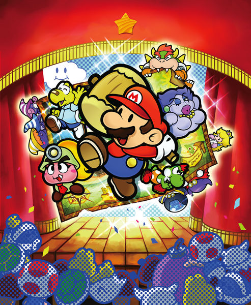
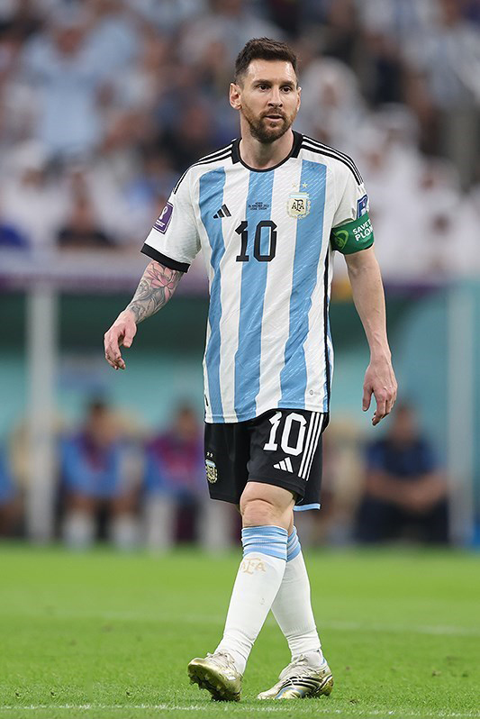
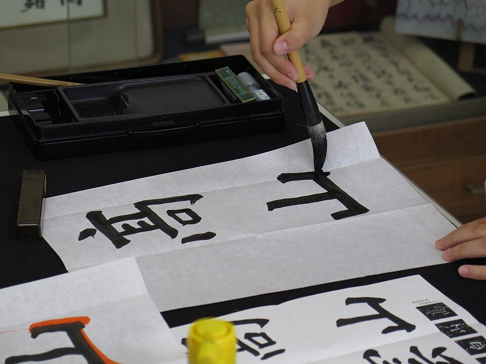
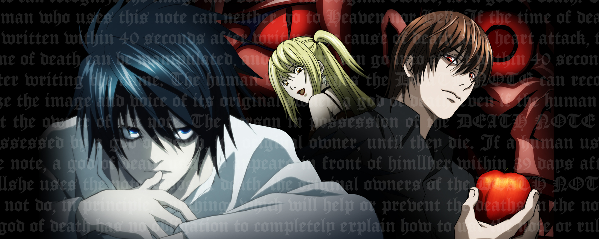
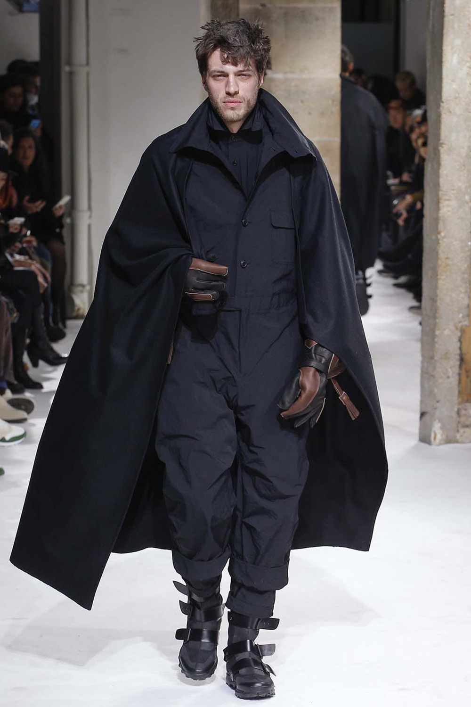
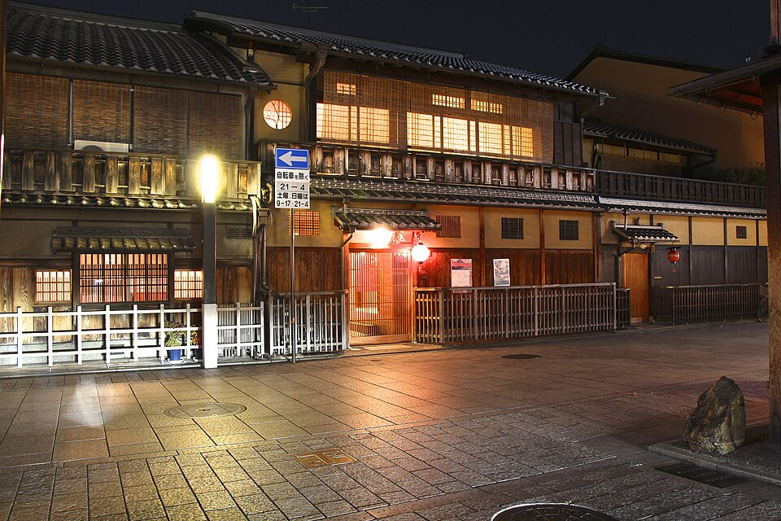

Outside the lab
I'm Kevin. This is the stuff I like when I'm not working on the things on the other pages.
Gaming

The all-time favorite
Paper Mario:
The Thousand-Year Door
I got a GameCube for my fourth birthday. Years later, I played TTYD through Dolphin, and more recently I set up my GameCube and finished it again. The story, the soundtrack, the whole thing. I still wish there were more games like it.
Mario in general is a big part of what I collect. I'd love to collect all the games, and having the actual consoles and games again has been a lot of fun.
I wrote more about it here →- Minecraft
- Another longtime favorite on the PC side of things.
- VALORANT
- Also a big one for me. DRG: Dragon Ranger Gaming.
Soccer

Messi. Of course.
I follow soccer, and Messi is my favorite. He definitely gets a spot here.
Japanese

I'm studying Japanese. It's a personal interest I want to keep making time for alongside school, work, and everything else.
Media

A few favorites
Death Note, Naruto's Uchiha clan, Dexter, and Harry Potter. My interests here definitely aren't limited to anime.
Backrooms & liminal spaces

Something feels a little off.
I'm really into the Backrooms and liminal spaces. Empty hallways, strange rooms, places that look familiar even when they aren't. A photo like this makes me wonder what's around the corner.
Fashion

Vkei & beyond
I've been getting more into fashion, especially visual kei and related styles. KMRii is a brand I really like, and Yohji Yamamoto is my favorite designer.
Travel

A pretty big bucket list.
Japan and Switzerland are big interests of mine.
And, obviously, tech.
Even outside of school and work, I'm still interested in computers, older hardware, and making things. Gaming was what got me into technology in the first place. That part never really went away.
Image credits
- Paper Mario artwork: © Nintendo / Intelligent Systems, via Super Mario Wiki. Reduced-size artwork accompanying personal commentary.
- Messi: Hossein Zohrevand / Tasnim News Agency, via Wikimedia Commons, CC BY 4.0. Unmodified.
- Japanese calligraphy: Douglas Perkins, via Wikimedia Commons, CC BY 4.0. Reduced-size version, otherwise unmodified. This is a reference photo, not my own handwriting.
- Death Note promotional artwork: VIZ Media. Rights belong to the respective creators and publishers.
- Backrooms: Bill Magritz / Bob Mazza, via Wikimedia Commons. Released for unrestricted use; unmodified.
- Fashion: Yohji Yamamoto, Autumn/Winter 2017-18, Look 43. Official collection photograph; rights belong to the respective owner.
- Kyoto: Kanchi1979, via Wikimedia Commons, CC BY-SA 4.0. Reduced-size version, otherwise unmodified. This is a reference photo, not my own travel photograph.